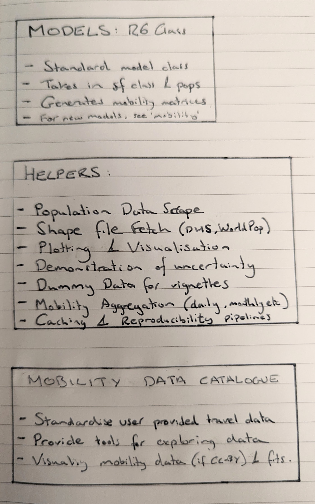

structure.RmdThis is an overall structure of the nomad package, which
details the different components (models, underlying data, population
hepers etc).
The package components are shown below:
 ### 1. Models
The main workhorse is an R6 mobility model class. This
class will store mobility models, which will include the same
functionality of the mobility model (prediction to new
data, use for destination probability prediction etc), while providing
additional functionality to help users:
Models are stored in nomad for users to apply for their
own research need. To help users identify the best model for their
needs, nomad also maintains a data catalogue of the
different mobility data sets that have been used in producing the
mobility models available in nomad.
The data catalgoue will be a structure data set (format undecided as yet) for storing meta data about each mobility data set that has been used to create mobility models. The meta data (mobility data survey size, sampling scheme, respondent characteristics, location, associated publication etc) will help guide users to understand which data source seems most suitable for their use case.
For example, end users may want to choose mobility models that have
been fit using data from the same country as their analysis, or may want
to select based on mobility data type (flight data, travel surveys etc).
To facilitate this need, nomad provides functionality to
query and visualise mobility data:
Once users have identified suitable data sets, they can identify the associated model objects for fits to these data sets.
End users are likely to approach nomad with their own
location data (lat/long, shape files, distance matrices etc) and
possibly linked population data. To help users get their data into a
format needed for mobility models as well as to help
provide interpretation and reproducibility for their analyses, we
provide series of helper functions in nomad:
Lastly, provide suppoting vignettes and guides to give demonstration
of full functionality, relationship to the mobility package
as well as how users with their own mobility data can use
mobility to fit mobility models and how to integrate these
with nomad either by submitting new PRs, or by converting
their mobility model into one that can leverate nomad
functionality.